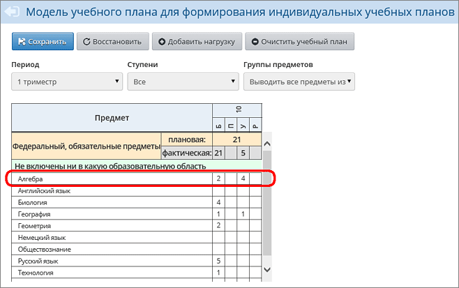

После того как изменён тип учебного плана для всех классов, в ИУП нужно отразить все уровни освоения предметов, которые есть в школе, для чего скорректировать нагрузку и нажать кнопку Сохранить.
На следующей иллюстрации, в частности, добавлены часы по предмету «Алгебра» для уровня «Углубленный»:

Примечание. Если необходимо удалить какие либо цифры в ИУП, например, если алгебра в этой параллели не изучается на базовом уровне, то это возможно будет сделать в дальнейшем - после того, как будут правильно сформированы все ПГ.